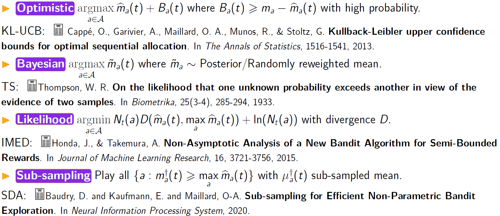
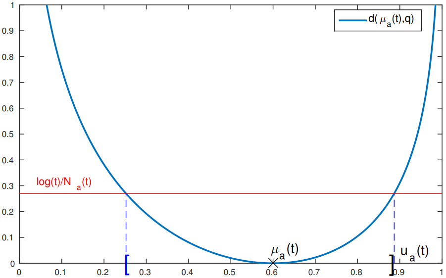

RECAP & PERSPECTIVE: Multi-armed bandits for sequential optimization
Odalric-Ambrym Maillard
HORIBA
April 22, 2025

Road map
- Optimization pipeline
- A generic methodology & formalism
- TS and related bandit strategies
- Four bandit strategies
- Optimal regret bounds
Optimization pipeline
A generic methodology & formalism
1.a) Generate offline data testbed
1.b) First consider a setup with known optimal solution, simplest case: compare ability of bandit vs baseline.
1.c) Move from simplest to realistic, still with known case: compare to baseline.
2) Only then, move to first online setup.
Thompson sampling and related bandit strategies
- The first bandit strategy (1933!)
- Provably regret efficient (2010)
- Interpretable Bayesian approach
Optimal regret bounds
We can prove that all consistent strategy \(\pi\) on a set \(\mathcal{M}\) of bandit instances
(that is, asymptotically good for all instances,)
must incur at least some regret on each bandit instance
(KL divergence between first argument and projection on set of mean higher than second argument)
(that is, asymptotically good for all instances,)
must incur at least some regret on each bandit instance
\(\forall {\bf M}\in\mathcal{M},\quad \liminf\limits_{T\to\infty} \frac{\mathfrak{R}_T(\pi,{\bf M})}{\log(T)} \geq \sum\limits_{a\in\mathcal{A}} \frac{\Delta_a}{K({\bf r}_a,{\bf m}_\star)}\)
where \(K\) denotes an information term(KL divergence between first argument and projection on set of mean higher than second argument)
Four bandit strategies

Leveraging lower bounds
KL-UCB: \(U_a(t) = \max \{q : N_a(t) d( \hat m_a(t), q) \leq \ln(t)\} \)
\(d(p,q)=KL(\cB(p),\cB(q)) = p\ln\frac{p}{q} + (1-p)\ln\frac{1-p}{1-q}\)
